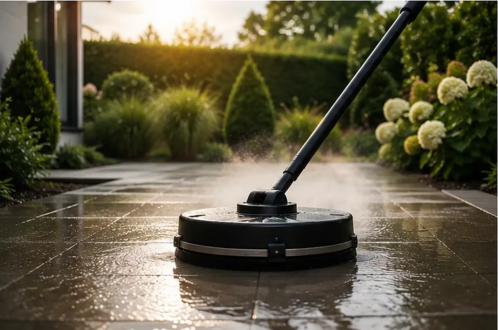

Terrassen- & Steinflächenreinigung
Ihre Terrasse kann mehr als grau.
Unter Grünbelag, Wetterpatina und Moosfugen liegt der Stein, den Sie einmal ausgesucht haben. Wir holen ihn zurück – rechtzeitig zur Gartensaison oder wann immer Sie möchten.
Vorher / Nachher
Derselbe Stein – zwei Welten.
Beide Aufnahmen zeigen exakt dieselbe Fläche vor und nach unserer Reinigung. Regler ziehen und vergleichen.
Materialkunde
Jeder Belag will anders behandelt werden.
Polierter Naturstein verträgt keinen harten Punktstrahl, Betonplatten vertragen keine sauren Reiniger, und Sandfugen wollen nach der Reinigung wieder aufgefüllt werden. Wer das ignoriert, hat nach der „Reinigung“ mehr Schaden als vorher.
Wir sehen uns Ihren Belag an, wählen Verfahren und Mittel passend zum Material und arbeiten uns dann Bahn für Bahn über die Fläche – mit dem Flächenreiniger, der gleichmäßige Ergebnisse ohne Streifenbildung liefert.
- Naturstein, Betonplatten, Pflaster, Feinsteinzeug
- Terrassen, Sitzplätze, Wege, Einfahrten und Treppen
- Fugenpflege: Nachsanden oder Neuverfugung auf Wunsch
- Optional: Imprägnierung gegen schnellen Neubewuchs

Nebenbei: Es geht auch um Sicherheit.
Grünbelag auf Stein wird bei Nässe glatt wie Seife – auf Treppen und Wegen ist das ein echtes Sturzrisiko, für Vermieter sogar ein Haftungsthema. Eine gereinigte Fläche sieht nicht nur besser aus, sie ist auch trittsicher. Gerade vor Herbst und Winter ist das der häufigste Grund, warum Hausverwaltungen uns beauftragen.
Gut zu wissen
Welcher Belag braucht welche Behandlung?
Betonplatten und Pflaster sind robust: Hier arbeiten wir mit dem Flächenreiniger und gutem Druck – das Ergebnis ist meist verblüffend hell. Naturstein verlangt mehr Gefühl: Sandstein und andere weiche Steine reinigen wir mit reduziertem Druck und passenden Steinreinigern, polierte Oberflächen grundsätzlich ohne harten Punktstrahl. Feinsteinzeug ist unempfindlich gegen Wasser, aber empfindlich gegen falsche Mittel, die Schlieren hinterlassen.
Deshalb beginnt jede Terrassenreinigung bei uns mit einem kurzen Blick auf den Belag – und im Zweifel mit einer Probefläche an unauffälliger Stelle.
Damit die Fläche lange schön bleibt, hat sich diese Reihenfolge bewährt:
- Reinigen: Belag und Fugen gründlich vom Bewuchs befreien
- Nachsanden: offene Sandfugen wieder auffüllen und verdichten
- Imprägnieren (optional): Oberfläche gegen Wasser und neuen Bewuchs schützen
- Pflegen: künftig reicht meist Kehren und gelegentliches Abspülen
Ob sich Schritt 3 bei Ihrem Belag lohnt, hängt von Material und Lage ab – wir sagen es Ihnen offen, bevor Sie Geld dafür ausgeben.
Häufige Fragen
Fragen zur Terrassen- und Steinreinigung.
Wann ist der beste Zeitpunkt für die Terrassenreinigung?
Klassisch im Frühjahr vor der Gartensaison – dann haben Sie den ganzen Sommer etwas davon. Grundsätzlich reinigen wir bei frostfreiem Wetter das ganze Jahr über.
Was passiert mit den Fugen?
Lose Sandfugen werden bei der Reinigung teilweise mit ausgespült – das ist normal. Auf Wunsch sanden wir die Fugen danach neu ein oder beraten Sie zu fester Verfugung, damit Unkraut und Moos es künftig schwerer haben.
Lohnt sich eine Imprägnierung nach der Reinigung?
Bei stark beanspruchten oder schattigen Flächen: ja. Die Imprägnierung verzögert Neubewuchs und erleichtert die künftige Pflege deutlich. Ob sie sich bei Ihrem Belag lohnt, sagen wir Ihnen offen bei der Besichtigung.
Passt dazu
Das gepflegte Grundstück – komplett gedacht.
Bereit für den Sommer auf hellem Stein?
Quadratmeter, Belagsart, ein Foto – mehr brauchen wir nicht für ein klares Angebot zur Terrassenreinigung.